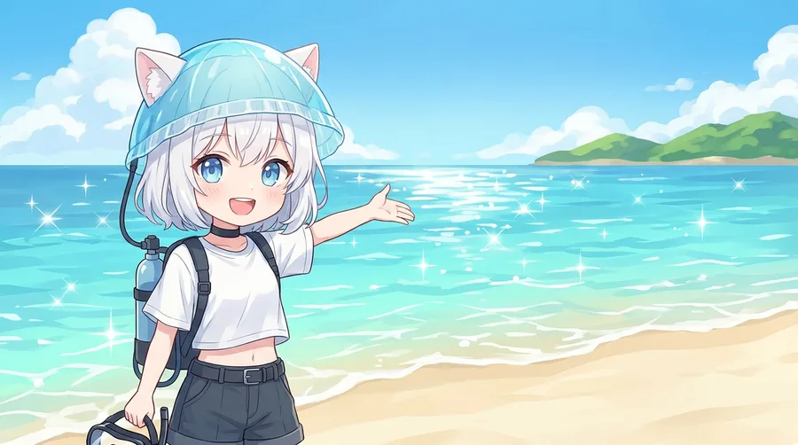
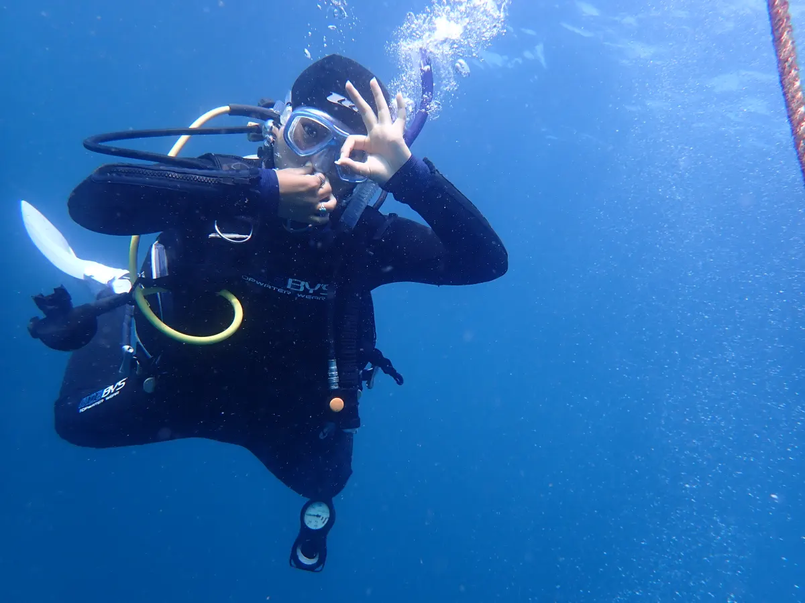
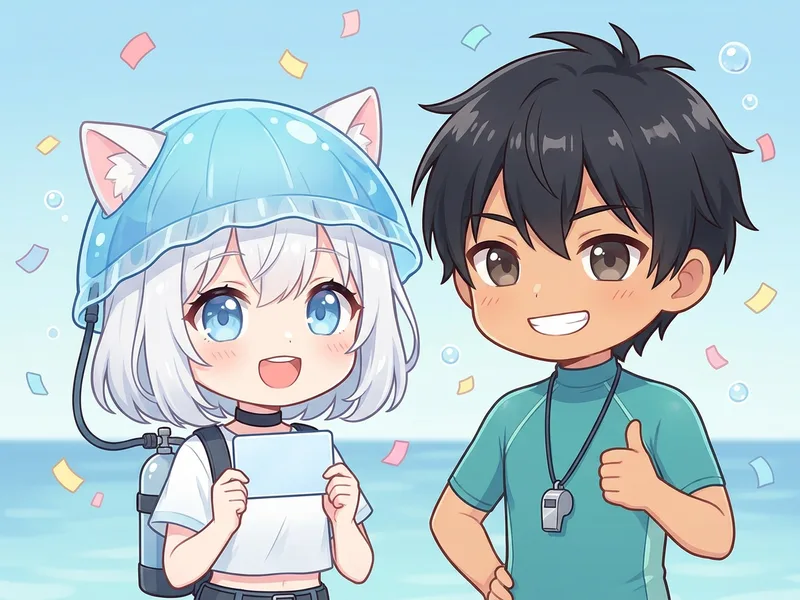
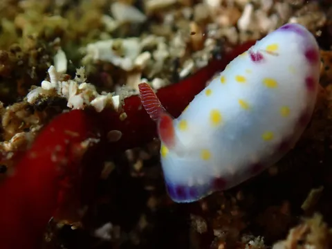
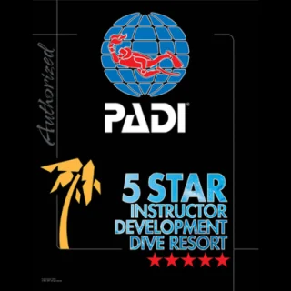
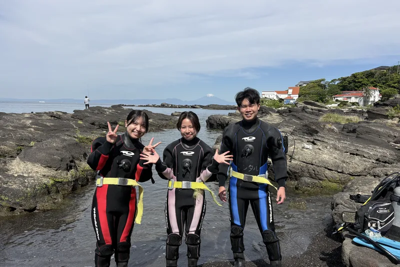
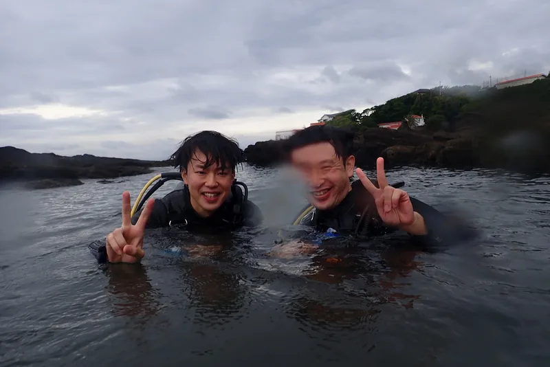
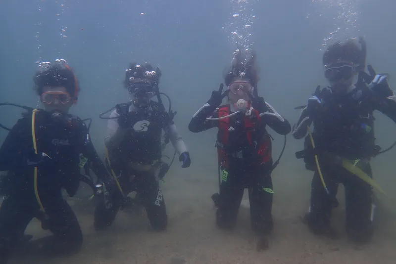

Summer Debut
ライセンスを取れば、

ライセンスを取れば、
夏の海は「眺める場所」から「潜る場所」に変わる

この夏、海の中で呼吸しよう。
学科はスマホで事前学習だから、海に集中できる。
PADIオープンウォーターダイバー取得｜神奈川・三浦
友だち追加後、「夏割」と一言送るだけでOK。
特典の適用と空き状況をあわせてご案内します。迷っている段階のご相談も歓迎です。

※付き添いダイビングの割引は、認定ダイバーの方が対象です（レンタル器材代は別途）。少人数制のため同じ日にご案内できる人数に限りがありますので、日程はLINEでご相談ください。
※いまの季節はOWD2日＋AOW2日の最短4日間で取得できます。冬季や習熟度によりOWD3日＋AOW2日（計5日間）になる場合があり、そのときはレンタル代が1日分（¥5,500）増えます。もちろんOWDだけの受講もOK。AOWはあとから受講することもできます。
| よくある「◯万円〜」表示 | 三浦 海の学校 | |
|---|---|---|
| 教材費・申請料 | 別料金のことが多い | 込み |
| 海洋実習費・施設利用料 | 別料金のことが多い | 込み |
| 保険 | 要確認 | 込み |
| 器材レンタル | 別料金 | ¥5,500/日と明示 |
| 支払い総額 | 申込後にわかる | 申込前にわかる |
※「よくある表示」は一般的な広告表示の傾向であり、特定の他社を指すものではありません。各社の最新料金は各公式サイトでご確認ください。

インストラクターを育てる立場のPADIコースディレクターから直接学べる、神奈川でも数少ないスクールです。

大人数の流れ作業にはしません。プールのように穏やかな浅場で、一人ひとりのペースに合わせて練習します。

開催は三浦・城ヶ島と宮川湾。京急三崎口駅から開催地まで無料送迎をご利用いただけます（要予約）。都心から日帰りで通えます。
ご希望の時期・不安なことをLINEで気軽にどうぞ。日程と持ち物をご案内します。
スマホで学科を事前に学習。当日は海に集中できます。

呼吸・浮力の基本を浅場でゆっくり練習してから、城ヶ島・宮川湾の海へ。実技は2〜3日間です。

世界中の海で使えるCカードを取得。次の週末から、海はあなたのフィールドです。

| 実技2日間のイメージ | ||
|---|---|---|
| 1日目 | 午前: 器材の使い方・穏やかな浅場で基本練習 | 午後: 海洋実習①② |
| 2日目 | 午前: 海洋実習③④ | 午後: スキル確認・ログ付け・認定手続き |
※あくまで目安です。海況やお一人おひとりの進み具合に合わせて調整します（3日間に分けてもOK）。



インストラクターを育成するコースディレクターとして、三浦の海で講習を中心に活動。「泳げない」「体力に自信がない」方こそ、基本から一つずつ。あなたのペースで必ず潜れるようになります。

PADI 5スター IDCダイブリゾート。コースディレクターは、PADIインストラクターを育成・認定できる最上位ランクです。「教わる先生」の先生から、直接学べます。
泳ぎが苦手で不安でしたが、基本から一つずつ教えてもらい、海でも落ち着いて潜れました。少人数なので質問もしやすく、講習があっという間でした。
60歳を過ぎてからの挑戦でしたが、自分のペースに合わせてもらえて楽しめました。今ではファンダイビングにも通っています。
一人で参加しましたが、すぐに打ち解けられました。品川から1時間で着くのでアクセスも楽。OWD取得後すぐにAOWも受講しました。
実際の講習・海洋実習のようす



はい、大丈夫です。ダイビングは水泳と違い、器材で呼吸と浮力をコントロールします。プールのように穏やかな浅場で基礎からゆっくり練習するので、水が苦手な方でも安心です。
eラーニング（自宅学習）＋実技2〜3日間が目安です。連続した2日間でも、週末に分けてもOK。海況や習熟度に合わせて無理なく進めます。
10歳から参加できます。上限はなく、60代・70代で取得される方も多数いらっしゃいます。
はい。講習費¥53,900に教材・申請料・保険まで含まれ、あとはレンタル器材¥5,500×実技日数のみ（通常総額¥64,900）。さらに9/30までのLINE特典でレンタル1日分が無料になり、実技2日なら総額¥59,400です。実技が3日になった場合もレンタル代1日分が増えるだけで、講習費の追加はありません。水着・タオル・日焼け止めだけご持参ください。
しません。講習はレンタル器材（¥5,500/日）で完結し、器材の購入は不要です。続けたくなってから、必要なものを必要なタイミングでご相談いただければ十分です。
安全を最優先に、当日の海況を確認して開催を判断します。海況により開催場所の変更や日程のご相談をさせていただくことがあります。無理に潜ることはありません。
おひとりでのご参加はとても多いです。少人数制なので置いていかれる心配もありません。
開催は神奈川県三浦市の城ヶ島・宮川湾です。詳しい集合場所はご予約時にご案内します。京急三崎口駅から開催地まで無料送迎をご利用いただけます（要予約）。
少人数制のため、各日にご案内できる人数はわずかです。
8〜9月は土日から埋まっていきます。9/30までのLINE特典（レンタル1日分無料）も、このボタンから。

パソコンでご覧の方は、スマホのカメラでこのQRを読み取るとLINEが開きます。
メール派の方はお問い合わせフォームへ